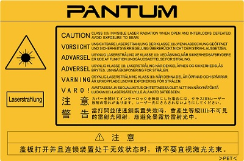

Vorwort
Willkommen bei Pantum!
Wir freuen uns, dass Sie sich für einen Drucker der Pantum-Produktreihe entschieden haben!
Die folgenden Abschnitte enthalten wichtige Informationen. Lesen Sie diese Informationen aufmerksam durch.
Rechtliche Hinweise
Markenzeichen
Pantum und die Pantum-Logos sind eingetragene Warenzeichen der Zhuhai Pantum Electronics Co.,Ltd.
Microsoft®, Windows®, Windows Server® und Windows Vista® sind eingetragene Markenzeichen von Microsoft Corporation in den USA oder anderen Ländern/Regionen.
Wi-Fi® und Wi-Fi Protected Setup™ sind eingetragene Markenzeichen der Wi-Fi Alliance.
Die Namen der Software, auf die in diesem Handbuch Bezug genommen wird, sind Eigentum ihrer jeweiligen Inhaber gemäß entsprechenden Lizenzvereinbarungen. Die Namen werden ausschließlich zu Anleitungszwecken genannt.
Alle anderen in diesem Handbuch erwähnten Produkt- oder Markennamen sind möglicherweise eingetragene Markenzeichen, Marken oder Dienstleistungsmarken ihrer jeweiligen Inhaber. Die Namen werden ausschließlich zu Anleitungszwecken genannt.
Copyright
Das Copyright dieses Benutzerhandbuchs liegt bei Zhuhai Pantum Electronics Co.,Ltd.
Das Benutzerhandbuch darf mit keinen Mitteln und in keiner Form ohne vorherige schriftliche Genehmigung von Zhuhai Pantum Electronics Co.,Ltd. kopiert, übersetzt, geändert oder weitergegeben werden.
Version: V1.5
Haftungsausschluss
Zhuhai Pantum Electronics Co.,Ltd. behält sich das Recht vor, das Benutzerhandbuch zu Zwecken der Verbesserung der Benutzerfreundlichkeit zu ändern. Die darin enthaltenen Informationen können ohne Vorankündigung geändert werden.
Benutzer sind für alle Schäden verantwortlich, die aus einer Nichtbeachtung der Anweisungen in diesem Benutzerhandbuch entstehen. Zhuhai Pantum Electronics Co.,Ltd. übernimmt keinerlei ausdrückliche oder implizite Garantien und lehnt jegliche Gewährleistung bezüglich dieses Benutzerhandbuchs ab, mit Ausnahme der ausdrücklichen Garantie im Wartungshandbuch oder Wartungsvertrag des Produkts (einschließlich Layout und Text).
Die Verwendung dieses Produkts für das Kopieren, Drucken oder Scannen bestimmter Dokumente oder Bilder bzw. andere Formen der Bearbeitung solcher Dokumente oder Bilder sind möglicherweise durch anwendbare Gesetze verboten. Wenn Sie unsicher sind, ob die Verwendung dieses Produkts für bestimmte Dokumente oder Bilder rechtmäßig ist, wenden Sie sich zuvor an Ihren Rechtsberater.
Sicherheitsinformationen
Trennen Sie die Stromversorgung
Dieses Produkt sollte in der nähe von oder an leicht zugänglichen Stromsteckern angeschlossen werden, um bei Bedarf die Stromversorgung schnell trennen zu können!
Lasersicherheit
Laserstrahlung ist gesundheitsschädlich. Da die Laserkomponenten dicht verschlossen im Drucker untergebracht sind, kann keine Laserstrahlung austreten. Um eine Strahlenexposition zu vermeiden, darf der Drucker nicht beliebig demontiert werden.
Der Drucker erfüllt die Anforderungen für Laserprodukte der Klasse 1 gemäß CFR-Norm. Der Drucker ist mit einer Laserdiode der Klasse III B ausgestattet; es erfolgt kein Austritt der Strahlung in die Laserkomponenten.
Der folgende Aufkleber ist an den Laserkomponenten im Inneren des Druckers angebracht:

Sicherheitswarnungen
Beachten Sie vor der Verwendung des Druckers die folgenden Sicherheitswarnungen:
Vorsichtsmaßnahmen
Vor der Verwendung des Druckers einzuhaltende Vorsichtsmaßnahmen:
1. Lesen Sie alle Anweisungen sorgfältig durch.
2. Machen Sie sich mit den Grundlagen der Bedienung elektrischer Geräte vertraut.
3. Beachten Sie alle Warnungen und Anweisungen am Gerät bzw. im Handbuch, das mit dem Gerät mitgeliefert wurde.
4. Falls die Anweisungen im Handbuch und die Sicherheitsinformationen voneinander abweichen, lesen Sie erneut die Sicherheitsinformationen, um sicherzustellen, dass Sie die Anweisungen richtig verstanden haben. Wenn Sie das Problem nicht lösen können, kontaktieren Sie die Kundendienst-Hotline oder einen Servicemitarbeiter.
5. Ziehen Sie das Netzkabel aus der Steckdose, bevor Sie das Gerät reinigen. Verwenden Sie zum Reinigen keine Flüssigkeiten oder Aerosole.
6. Stellen Sie sicher, dass das Gerät auf einer stabilen Oberfläche aufgestellt ist, um schwere Verletzungen durch Herunterfallen des Geräts zu vermeiden.
7. Stellen Sie das Gerät nicht in der Nähe einer Antenne, Klimaanlage oder Lüftungsleitung auf.
8. Legen Sie keine Gegenstände auf das Netzkabel. Stellen Sie das Gerät so auf, dass das Netzkabel keine Stolpergefahr darstellt.
9. Steckdosen und Verlängerungskabel dürfen nicht überlastet werden. Andernfalls kommt es zu einer Leistungsminderung und es besteht Feuer- und Stromschlaggefahr.
10. Sorgen Sie dafür, dass das Netzkabel und das Computer-Anschlusskabel nicht von Haustieren beschädigt werden.
11. Stellen Sie sicher, dass der Gerätesteckplatz nicht mit scharfen Gegenständen in Berührung kommt, um Kontakt mit dem Hochspannungsgerät zu verhindern. Andernfalls besteht Feuer- und Stromschlaggefahr. Achten Sie darauf, dass keine Flüssigkeiten auf das Gerät gelangen.
12. Bauen Sie das Gerät nicht auseinander, andernfalls besteht Stromschlaggefahr. Notwendige Reparaturen dürfen nur durch professionelles Wartungspersonal erfolgen. Das Öffnen oder Entfernen der Abdeckung kann zu einem Stromschlag oder anderen Gefahren führen. Eine unsachgemäße Montage oder Demontage birgt die Gefahr eines Stromschlags bei einer zukünftigen Verwendung des Geräts.
13. Falls eine der folgenden Situationen eintritt, trennen Sie die Geräteverbindung mit dem Computer, ziehen Sie das Netzkabel aus der Steckdose und kontaktieren Sie zu Wartungszwecken einen autorisierten Kundendienstmitarbeiter:
• Auf das Gerät wurde Flüssigkeit verschüttet.
• Das Gerät ist mit Regen oder Wasser in Kontakt gekommen.
• Das Gerät ist heruntergefallen bzw. die Abdeckung ist beschädigt.
• Die Geräteleistung hat sich erheblich verschlechtert.
14. Passen Sie nur die in den Anweisungen erwähnten Einstellungen an. Eine unsachgemäße Anpassung sonstiger Einstellungen kann das Gerät beschädigen und die Problembehebung durch das professionelle Wartungspersonal erschweren.
15. Verwenden Sie das Gerät nicht während eines Gewitters, andernfalls besteht Stromschlaggefahr. Ziehen Sie bei einem Gewitter, falls möglich, das Netzkabel aus der Steckdose.
16. Wenn Sie viele Seiten nacheinander drucken, wird die Oberfläche des Fachs sehr heiß. Berühren Sie die Oberfläche nicht und halten Sie Kinder von dieser Oberfläche fern.
17. Das Signalkabel des Geräts, das mit dem Drucker verbunden ist, kann nicht im Außenbereich verwendet werden.
18. Stellen Sie eine ausreichende Belüftung sicher, wenn Sie den Drucker in schlecht belüfteten Räumen über einen längeren Zeitraum verwenden oder große Mengen an Dokumenten drucken.
19. Das Gerät wechselt im Standby-Modus automatisch in den Energiesparmodus (Ruhezustand), wenn es ca. 1 Minute keinen Auftrag erhalten hat; um den Stromverbrauch auf null zu reduzieren, muss das Gerät von der externen Stromversorgung getrennt werden.
20. Da es sich um ein Klasse-1-Gerät handelt, muss das Produkt bei Verwendung an eine Steckdose mit Erdungsleitung angeschlossen sein.
21. Das Produkt muss während des Transports entsprechend den Versandmarkierungen auf dem Karton gelagert werden.
22. Dieses Produkt ist ein Niederspannungsgerät. Bei Verwendung des Produkts mit einer Spannung unterhalb des angegebenen Spannungsbereichs kann es dazu kommen, dass sich der Toner vom gedruckten Dokument löst oder das Gerät nur langsam startet. Lesen Sie in diesem Fall die Sicherheitsvorkehrungen zum Produkt oder kontaktieren Sie den Pantum-Kundendienst.
23. Dieses Produkt wird als vollständiges Gerät ausgeliefert. Ersatzteile können bei Bedarf beim Pantum-Kundendienst bestellt werden. Falls das gekaufte Produkt nicht mit den Angaben auf dem Packschein übereinstimmt, kontaktieren Sie den zuständigen Kundendienst, um das Problem zu lösen.
24. Stellen Sie das Produkt an einem Standort mit Temperaturen zwischen 10 °C und 32,5 °C und einer relativen Luftfeuchtigkeit zwischen 20 % und 80 % auf.
25. Aus Sicherheitsgründen sowie aus anderen Gründen kann es vorkommen, dass der Drucker nach einer längeren, durchgehenden Verwendung die Druckvorgänge mit Unterbrechungen ausführt.
26. Dieses Gerät erfüllt die lizenzfreie(n) RSS-Norm(en) der Industry Canada. Der Betrieb des Geräts unterliegt den folgenden zwei Bedingungen:
(1) Das Gerät darf keine Interferenzen verursachen.
(2) Das Gerät muss alle Interferenzen akzeptieren, auch Interferenzen, die einen ungewünschten Betrieb des Geräts verursachen.
27. IC-Strahlenbelastungserklärung:
Dieses Gerät erfüllt die Industry Canada- und FCC-Grenzwerte für Hochfrequenzstrahlung in einer unkontrollierten Umgebung. Das Gerät muss so aufgestellt werden, dass zwischen Ihnen und der Antenne ein Mindestabstand von 20 cm eingehalten wird.
Der Sender darf nicht am selben Ort oder gleichzeitig mit einer anderen Antenne bzw. einem anderen Sender verwendet werden.
28. Das Gerät wurde getestet und erfüllt die Grenzwerte für Digitalgeräte der Klasse B gemäß Teil 15 der FCC-Richtlinien. Diese Grenzwerte sollen einen angemessenen Schutz gegen schädliche Störungen in Wohnräumen bieten. Dieses Gerät erzeugt, verwendet und strahlt Hochfrequenzwellen aus und kann Störungen des Funkempfangs verursachen, wenn es nicht gemäß den Anweisungen zur Installation und Bedienung verwendet wird. Es ist jedoch nicht gewährleistet, dass unter bestimmten Installationsbedingungen keine anderen Störungen verursacht werden.
Falls dieses Gerät Störungen des Radio- oder Fernsehempfangs verursacht, was sich durch Ein- und Ausschalten des Geräts prüfen lässt, kann der Benutzer zur Beseitigung der Störungen eine oder mehrere der folgenden Maßnahmen ergreifen:
• Richten Sie die Empfangsantenne neu aus oder stellen Sie sie an einem anderen Standort auf.
• Vergrößern Sie den Abstand zwischen Gerät und Empfänger.
• Schließen Sie das Gerät an einer Steckdose an, die über einen anderen Stromkreis geführt wird als die Steckdose des Empfängers.
• Wenden Sie sich an Ihren Händler oder einen erfahrenen Radio-/TV-Techniker, um Hilfe zu unterhalten.
29. Änderungen, die nicht ausdrücklich durch die für die Einhaltung verantwortliche Partei genehmigt wurden, können zum Erlöschen der Betriebserlaubnis für das Gerät führen.
30. Bewahren Sie dieses Benutzerhandbuch gut auf.
 Warnung
Warnung